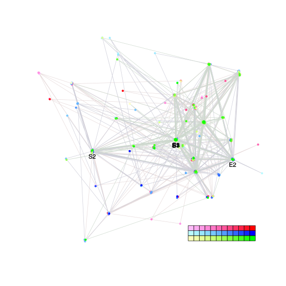
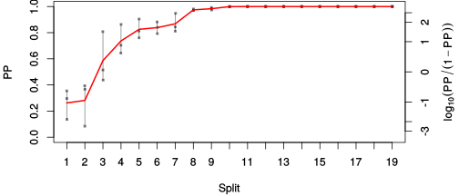
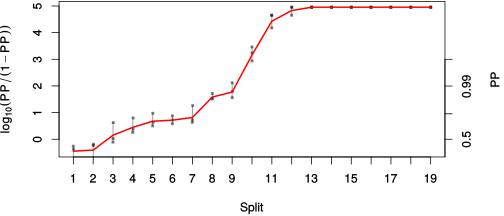

| chain # | burnin | subsample | Iterations (remaining) | command line | subdirectory | directory |
|---|---|---|---|---|---|---|
| 1 | 10000 | 1 | 90000 | bali-phy E1_AA_red3_v2_Lambda_Alpha_Manatees_BetaGamma.fas -s 61325 -n Lambda_Alpha_Manatees_BetaGamma_c1 | Lambda_Alpha_Manatees_BetaGamma_c1-1 | /DATA/work/ONCOGENEVOL/database/trees/Bali-Phy/E1 |
| 2 | 10000 | 1 | 90000 | bali-phy E1_AA_red3_v2_Lambda_Alpha_Manatees_BetaGamma.fas -s 96103 -n Lambda_Alpha_Manatees_BetaGamma_c2 | Lambda_Alpha_Manatees_BetaGamma_c2-1 | /DATA/work/ONCOGENEVOL/database/trees/Bali-Phy/E1 |
| 3 | 10000 | 1 | 90000 | bali-phy E1_AA_red3_v2_Lambda_Alpha_Manatees_BetaGamma.fas -s 54185 -n Lambda_Alpha_Manatees_BetaGamma_c3 | Lambda_Alpha_Manatees_BetaGamma_c3-1 | /DATA/work/ONCOGENEVOL/database/trees/Bali-Phy/E1 |
| P(data|M) = -21193.286 +- 2.342 | Complete sample: 273 topologies | 95% Bayesian credible interval: 59 topologies |

Phylogeny Distribution

| Partition support: Summary |
| Partition support graph: SVG |
| 50% consensus | Newick (+PP) | SVG | |||||
| 66% consensus | Newick (+PP) | SVG | |||||
| 80% consensus | Newick (+PP) | SVG | |||||
| 90% consensus | Newick (+PP) | SVG | |||||
| 95% consensus | Newick (+PP) | SVG | |||||
| 99% consensus | Newick (+PP) | SVG | |||||
| 100% consensus | Newick (+PP) | SVG | |||||
| MAP | Newick (+PP) | SVG | |||||
| greedy | Newick (+PP) | SVG |
{kind=link}
{kind=link}
{kind=link}
{kind=link}
{kind=link}
{kind=link}
{kind=link}
{kind=link}
Alignment Distribution
Partition 1
| Diff | Min. %identity | # Sites | Constant | Informative | ||||
|---|---|---|---|---|---|---|---|---|
| Initial | FASTA | HTML | Diff | 4.09% | 669 | 1 (0.149%) | 659 (98.5%) | |
| Best (WPD) | FASTA | HTML | AU | 30.9% | 1018 | 66 (6.48%) | 528 (51.9%) |


Mixing
| burnin (scalar) | ESS (scalar) | ESS (partition) | ASDSF | MSDSF | PSRF-CI80% | PSRF-RCF |
|---|---|---|---|---|---|---|
| 2391 | 5.478 | 25.958 | 0.045 | 0.196 | 1.607 | 6.225 |
Projection of RF distances for the first 3 chains3D | Variation of split PPs across chains |
Scalar variables
| Statistic | Median | 95% BCI | ACT | ESS | burnin | PSRF-CI80% | PSRF-RCF |
|---|---|---|---|---|---|---|---|
| prior | -1666 | (-1786, -1551) | 3039 | 88 | 1963 | 1.037 | 0.998 |
| prior_A1 | -1718 | (-1837, -1604) | 3020 | 89 | 1610 | 1.036 | 0.9982 |
| likelihood | -2.109e+04 | (-2.117e+04, -2.1e+04) | 3295 | 81 | 1485 | 1.037 | 1.014 |
| logp | -2.275e+04 | (-2.282e+04, -2.269e+04) | 717 | 376 | 2240 | 1.01 | 1.001 |
| Heat.beta | 1 | ||||||
| Scale1 | 7.021 | (4.574, 10.18) | 1.015 | 265899 | 154 | 0.9999 | 1.001 |
| S1.F.pi.A | 0.07142 | (0.06433, 0.07893) | 19 | 14211 | 200 | 1.005 | 1.006 |
| S1.F.pi.R | 0.04485 | (0.03933, 0.05072) | 9.048 | 29839 | 407 | 1 | 0.9979 |
| S1.F.pi.N | 0.03483 | (0.03043, 0.03952) | 16.46 | 16403 | 295 | 1.001 | 1.006 |
| S1.F.pi.D | 0.0607 | (0.05383, 0.06785) | 8.906 | 30315 | 492 | 1 | 1.004 |
| S1.F.pi.C | 0.05344 | (0.04567, 0.06156) | 9.243 | 29211 | 634 | 1.004 | 1.007 |
| S1.F.pi.Q | 0.04044 | (0.03553, 0.04556) | 15.64 | 17258 | 275 | 1 | 0.9969 |
| S1.F.pi.E | 0.05775 | (0.05149, 0.06423) | 117.4 | 2299 | 703 | 1.005 | 1.004 |
| S1.F.pi.G | 0.07862 | (0.06917, 0.08845) | 49.55 | 5449 | 519 | 1 | 1.002 |
| S1.F.pi.H | 0.02463 | (0.02068, 0.0288) | 8.385 | 32198 | 114 | 1 | 0.9946 |
| S1.F.pi.I | 0.04369 | (0.03796, 0.04972) | 23.83 | 11331 | 297 | 1.001 | 1.008 |
| S1.F.pi.L | 0.09943 | (0.08977, 0.1094) | 11.26 | 23981 | 372 | 1 | 0.9972 |
| S1.F.pi.K | 0.04052 | (0.03534, 0.04593) | 8.668 | 31148 | 361 | 1 | 0.9997 |
| S1.F.pi.M | 0.01998 | (0.01653, 0.02369) | 8.286 | 32586 | 266 | 1 | 0.9973 |
| S1.F.pi.F | 0.04907 | (0.04216, 0.0562) | 11.95 | 22601 | 251 | 1.001 | 0.9997 |
| S1.F.pi.P | 0.04014 | (0.03378, 0.04695) | 155.6 | 1735 | 308 | 1.004 | 1.006 |
| S1.F.pi.S | 0.06906 | (0.0623, 0.07622) | 41.44 | 6516 | 149 | 1.005 | 0.9996 |
| S1.F.pi.T | 0.06326 | (0.0567, 0.07014) | 58.24 | 4636 | 254 | 1.002 | 1.007 |
| S1.F.pi.W | 0.01088 | (0.007328, 0.01471) | 9.94 | 27164 | 512 | 1.001 | 1.005 |
| S1.F.pi.Y | 0.02695 | (0.02202, 0.03216) | 16.89 | 15981 | 619 | 1.003 | 1.006 |
| S1.F.pi.V | 0.06892 | (0.06171, 0.07642) | 241.1 | 1119 | 340 | 1.007 | 1.009 |
| I1.RS07.meanIndelLengthMinus1 | 2.626 | (2.092, 3.223) | 3155 | 85 | 233 | 1.022 | 1.036 |
| I1.RS07.logLambda | -3.853 | (-4.024, -3.685) | 1134 | 238 | 421 | 1.014 | 1.008 |
| |A1| | 982 | (927, 1055) | 4.929e+04 | 5 | 2391 | 1.607 | 6.225 |
| #indels1 | 206 | (190, 223) | 3030 | 89 | 1610 | 1.048 | 1.001 |
| |indels1| | 755 | (668, 840) | 4236 | 63 | 817 | 1.027 | 1.042 |
| #substs1 | 3947 | (3886, 3996) | 3.53e+04 | 7 | 1410 | 1.298 | 2.001 |
| Scale1*|T| | 8.072 | (7.776, 8.37) | 1654 | 163 | 332 | 1.009 | 1.015 |
| |A| | 982 | (927, 1055) | 4.929e+04 | 5 | 2391 | 1.607 | 6.225 |
| #indels | 206 | (190, 223) | 3030 | 89 | 1610 | 1.048 | 1.001 |
| |indels| | 755 | (668, 840) | 4236 | 63 | 817 | 1.027 | 1.042 |
| #substs | 3947 | (3886, 3996) | 3.53e+04 | 7 | 1410 | 1.298 | 2.001 |
| |T| | 1.149 | (0.7329, 1.633) | 1 | 270003 | 225 | 0.9998 | 1 |